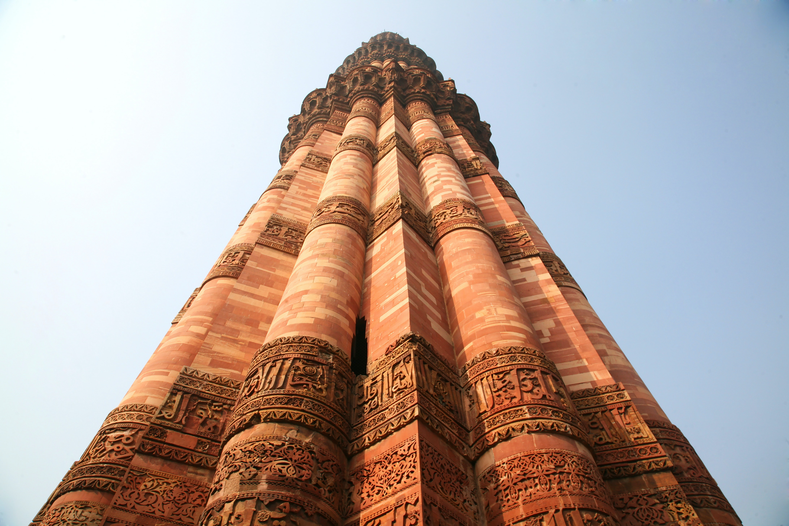

Taj Mahal

The Taj Mahal is a white marble mausoleum located in Agra, India. It was built by Mughal Emperor Shah Jahan in memory of his wife Mumtaz Mahal. It is considered one of the most beautiful buildings in the world and is a UNESCO World Heritage Site.
Qutub Minar
The Qutub Minar is a minaret located in Delhi, India. It is made of red sandstone and marble and is the tallest brick minaret in the world. It was built by Qutub-ud-din Aibak and completed by his successor, Iltutmish.
Agra Fort

The Agra Fort is a historical fort located in Agra, India. It was built by the Mughal Emperor Akbar in the 16th century and is a UNESCO World Heritage Site. The fort has several beautiful palaces, mosques, and gardens within its walls.